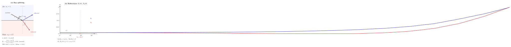

阳光如何穿过一张玻璃? 多少能量返回?
上一节我们用斯涅尔定律解释了光线为什么在界面上"拐弯". 但斯涅尔定律只告诉我们拐弯的方向, 没告诉我们每条光线携带多少能量. 生活经验提醒我们这一点不容忽视: 当你走近一扇朝向街道的玻璃窗, 你既能看见窗外的行人, 也能隐约看见自己的倒影. 这意味着玻璃把一部分光透了过去, 把一部分光反射了回来. 两者各占多少? 和入射角有关吗? 和偏振有关吗?
这个问题看似琐碎, 却是 19 世纪波动光学的试金石. 如果光是一种横波, 那么电场矢量在界面两侧的行为就必须遵守电磁学的边界条件, 由此必然推出一套反射-透射公式. 菲涅耳在 1823 年 (比麦克斯韦方程组的建立还早四十多年) 给出了这套公式, 它解释了为什么湖面在掠射时像镜子, 为什么偏振太阳镜能削掉水面眩光, 为什么一根头发丝粗的玻璃芯能把信号送过太平洋. 这一节, 我们就把这套公式从边界条件推出来, 并代入三组真实数字看看它到底说了什么.
一、边界条件: 为什么光在界面上必须分裂
考虑一束平面单色光从折射率 $n_1$ 的介质 (空气) 斜射到折射率 $n_2$ 的介质 (玻璃) 表面. 我们已经知道, 出射波有两支: 一支沿反射方向回到介质 1, 一支沿折射方向进入介质 2. 为什么不能只有透射, 没有反射? 这个问题的答案完全埋在麦克斯韦方程的界面条件里.
在任何两种介质的分界面上, 电磁场必须满足四条条件: 电场的切向分量连续, 磁场的切向分量连续 (假设界面无自由电流), 电位移的法向分量连续 (假设界面无自由电荷), 磁感应强度的法向分量连续. 对非磁性透明介质, 最关键的是前两条. 设入射波、反射波、透射波的电场振幅分别为 $E_i, E_r, E_t$, 那么在界面上 ($z=0$) 无论哪一瞬间, 切向分量之和必须左右相等. 仅靠一支透射波, 无法同时满足 $E$ 与 $H$ 的切向连续, 因为 $E$ 和 $H$ 由波阻抗 $\eta=\sqrt{\mu/\varepsilon}$ 关联, 两边介质的 $\eta$ 不同. 所以必须再引入一支反射波, 用它的振幅把两条连续性方程同时满足. 两个未知数 ($E_r, E_t$), 两个方程, 解唯一.
这里我们要分两种偏振单独处理, 因为电场相对于入射面 (由入射光线与法线张成的平面) 的取向不同, 边界条件的投影也不同. 一种是 s-极化 (也叫 TE, 电场垂直于入射面), 另一种是 p-极化 (也叫 TM, 电场在入射面内). 自然光是两者的非相干叠加, 分别求解再平均即可.
对 s-极化, 电场全部是切向分量, 连续性给 $E_i + E_r = E_t$. 磁场的切向分量涉及 $H\cos\theta$, 于是得到 $(E_i - E_r)\cos\theta_i/\eta_1 = E_t \cos\theta_t/\eta_2$. 消去 $E_t$ 后定义反射振幅 $r_s = E_r / E_i$, 得到第一条菲涅耳公式:
$$ r_s(\theta_i) = \frac{n_1 \cos\theta_i - n_2 \cos\theta_t}{n_1 \cos\theta_i + n_2 \cos\theta_t} \tag{1} $$
对 p-极化, 磁场是切向分量, 电场要投影到切向, 于是角度的分布相反:
$$ r_p(\theta_i) = \frac{n_2 \cos\theta_i - n_1 \cos\theta_t}{n_2 \cos\theta_i + n_1 \cos\theta_t} \tag{2} $$
(1) 式与 (2) 式, 加上斯涅尔定律 $n_1 \sin\theta_i = n_2 \sin\theta_t$ 把 $\theta_t$ 消掉, 就是 1823 年菲涅耳写下的东西. 注意它给出的是振幅系数, 能量系数还要再平方一次: $R_s = |r_s|^2$, $R_p = |r_p|^2$. 透射能量则由能量守恒 $T = 1 - R$ 兜底 (严格写还要带一个几何因子 $n_2\cos\theta_t / n_1 \cos\theta_i$, 但两种偏振各自都守恒).

二、正入射: 4% 的日常窗玻璃
最容易检验 (1)(2) 式的极限是正入射 $\theta_i \to 0$. 此时 $\cos\theta_i = \cos\theta_t = 1$, 两条公式合并为同一个:
$$ r_\perp = \frac{n_1 - n_2}{n_1 + n_2}, \qquad R_\perp = \left(\frac{n_1 - n_2}{n_1 + n_2}\right)^2 \tag{3} $$
这是一条最有名的结果. 代入空气 ($n_1=1$) 到普通窗玻璃 ($n_2 \approx 1.5$):
$R_\perp = \left(\dfrac{1-1.5}{1+1.5}\right)^2 = \left(-\dfrac{0.5}{2.5}\right)^2 = (0.2)^2 = 0.04 = 4\%.$
也就是说, 一束光垂直打在一块干净玻璃的前表面, 有大约 $4\%$ 的功率被反射回来, $96\%$ 进入玻璃. 进入玻璃的光再打到后表面, 又会有另一次 $4\%$ 反射 (按 (3) 式, $r$ 只取决于两侧折射率之比, 无论从空气到玻璃还是从玻璃到空气, $R$ 都是同一个 $4\%$). 如果忽略二次、三次来回反射的修正, 一片玻璃总共反射 $\approx 8\%$, 透射 $\approx 92\%$. 这个 $4\%$-$8\%$ 的比例正好是我们凭日常经验记住的玻璃橱窗的亮度.
这个数字的直接后果, 是所有带镜片的光学系统都必须对付. 一具复杂的相机镜头可能有十几片玻璃、几十个界面. 不做处理的话, 光过一次就要被反射 $1 - 0.96^{20} \approx 56\%$, 不仅亮度掉了一半, 那些乱窜的反射光还会以鬼影的形式跑到像面上. 现代镜头在每个表面镀上四分之一波长厚的低折射率膜 (氟化镁, $n \approx 1.38$), 靠前后界面反射相消把单面反射压到千分之几, 这才让十八片镜头成为可能. 这层膜的设计完全建立在上面三条菲涅耳公式之上.
三、Brewster 角: 反射光变成纯偏振
正入射把 (1)(2) 两条公式合并成了一条. 让我们把入射角从零慢慢加大, 看看两种偏振怎么分开. 对 s-极化, $R_s(\theta)$ 单调上升, 从 $\theta=0$ 的 $0.04$ 一路升到 $\theta=90^\circ$ 的 $1$. 对 p-极化, $R_p(\theta)$ 却先下降, 在某个特殊角度处触到零, 然后才急剧回升. 这个"反射率为零"的神奇角度, 就是 Brewster 角.
(2) 式告诉我们, $r_p = 0$ 的条件是 $n_2 \cos\theta_i = n_1 \cos\theta_t$. 结合斯涅尔定律 $n_1 \sin\theta_i = n_2 \sin\theta_t$, 可以化简为 $\sin\theta_i \cos\theta_i = \sin\theta_t \cos\theta_t$, 也就是 $\sin(2\theta_i) = \sin(2\theta_t)$. 排除 $\theta_i = \theta_t$ 的平凡解, 剩下的就是 $2\theta_i + 2\theta_t = 180^\circ$, 即 $\theta_i + \theta_t = 90^\circ$. 这告诉我们: 在 Brewster 角, 反射光线和折射光线彼此垂直. 再代回斯涅尔, 就得到 Brewster 自己在 1815 年凑出来的那条经验公式:
$$ \tan\theta_B = \frac{n_2}{n_1} \tag{4} $$
代入玻璃 $n_2 = 1.5$: $\theta_B = \arctan(1.5) = 56.31^\circ$. 代入水 $n_2 = 1.33$: $\theta_B = 53.06^\circ$.
为什么 p-极化在这个角度会完全不反射? 一个优美的直观解释如下: 反射光实际上是玻璃里的电子被入射电场驱动、做受迫振荡后辐射出去的二次波. 电偶极子有一条铁律: 它不能沿着自己的振荡方向辐射. 在 p-极化且入射角等于 Brewster 角时, 反射方向恰好与玻璃内电子的振荡方向重合, 于是这个方向的辐射振幅为零, 反射光消失. s-极化的电子是平行于界面振荡的, 无论入射角如何, 反射方向始终垂直于电子振荡方向, 辐射不为零.
这条定律的后果很实用. 阳光射到水面、柏油路面、车顶漆面时, 水平方向的反射都以 s-极化为主 (p-极化被 Brewster 机制削弱), 于是偏振太阳镜把透光轴取成垂直的, 就能把路面眩光滤掉一大半. 摄影师用的偏振滤镜也是这个原理. 更极致的应用是激光器里的 Brewster 窗: 把腔内的窗片以 $\theta_B$ 斜放, p-极化完全不反射、来回振荡毫无损失, s-极化反射一部分走掉. 多来回几次, 腔内只剩纯 p-极化光可以起振, 出射自动变成线偏振, 而无需额外放偏振片.
四、全内反射: 光纤通信的地基
前面两节里光都是从疏介质射入密介质 ($n_1 < n_2$). 现在把方向反过来: 从玻璃里朝外射向空气. 斯涅尔定律此时写成 $n_2 \sin\theta_i = n_1 \sin\theta_t$, 其中 $n_2 > n_1$. 随着 $\theta_i$ 增大, $\sin\theta_t = (n_2/n_1) \sin\theta_i$ 会先达到 $1$, 此后 $\sin\theta_t > 1$, 几何上根本没有一条实出射光线. 这个零界的入射角被称为全内反射临界角 $\theta_c$:
$\sin\theta_c = n_1 / n_2.$
玻璃到空气, $\sin\theta_c = 1/1.5$, $\theta_c = 41.81^\circ$. 水到空气, $\sin\theta_c = 1/1.33$, $\theta_c = 48.61^\circ$. 一旦入射角大于 $\theta_c$, 菲涅耳公式中的 $\cos\theta_t$ 变成纯虚数, 代入 (1)(2) 两式后分子分母模平方相等, 反射率严格等于 $1$. 所有能量都被反射回密介质, 透射侧只剩一层随距离指数衰减的倏逝波 (evanescent wave), 没有净能量流出.
这条看似只是几何光学一个小角落的定理, 改造了 20 世纪后半叶的通信基础. 光纤的结构是一根折射率较高的纤芯 ($n_{\text{芯}} \approx 1.48$), 外面包一层折射率稍低的包层 ($n_{\text{包层}} \approx 1.46$). 从端面耦合进来的光只要入射角大于纤芯-包层界面的临界角 $\theta_c = \arcsin(1.46/1.48) \approx 80.6^\circ$, 就会沿着纤芯不断全反射前进, 几乎没有能量漏出. 现代单模石英光纤在 $1550\,\mathrm{nm}$ 波长上的损耗只有 $0.17\,\mathrm{dB/km}$, 意味着一束光在光纤里跑 $100$ 公里仍保留约 $67\%$ 的功率. 这个数字背后的物理, 正是菲涅耳 1823 年写下的那两条振幅公式取 $\theta > \theta_c$ 的极限.
把这一节的三种极限汇总一下, 我们就得到菲涅耳方程的版图: 正入射处, 两偏振合一, 反射 $4\%$; Brewster 角处, p-极化反射为零, 反射光完全线偏振; 全内反射临界角之后, 反射率升为 $1$, 所有能量被封在密介质里. 中间连起来的, 是同一对公式 (1)(2) 的连续变化.
一点历史的补笔: 菲涅耳 (Augustin-Jean Fresnel, 1788-1827) 推出这两条公式时还只有三十五岁. 他没有麦克斯韦方程可用, 而是假设光是一种横向机械振动, 在"以太"界面上满足弹性连续性条件. 虽然底层图像错了, 他得到的公式却在形式上与四十年后从麦克斯韦方程严格推出的完全一致 —— 这是波动光学史上最惊人的一次"用错误推导得到正确答案". 菲涅耳方程和他更早 (1818) 用于衍射的振幅加和原理一起, 是十九世纪上半叶把光的波动说推上胜利高台的两块基石. 至于 Brewster (David Brewster, 1781-1868), 他在 1815 年用实验测出 (4) 式, 远早于任何理论解释; 他后来还发明了万花筒, 算是物理史上"同时擅长深刻与好玩"的少数几位之一.
小结
这一节我们把"光是什么"的回答从几何层面推到了能量层面. 前几节里的光线只有方向, 没有分量; 而菲涅耳方程告诉我们: 光必须被看作横向矢量波, 它有两个独立的偏振自由度, 每个自由度在界面上按自己的方式重新分配能量. $4\%$ 的玻璃反射率、$56.3^\circ$ 的 Brewster 角、$41.8^\circ$ 的全内反射临界角, 这三个数字连成一条曲线, 定义了日常光学世界的大半边界. 但我们对"光是什么"的追问还没完: 下一节我们要把两束光放在一起, 看看它们如何干涉出明暗条纹, 再逼问一次 —— 既然光是波, 它的"振幅"到底是什么东西的振幅?
▲